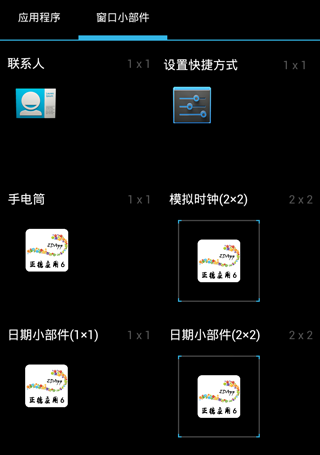
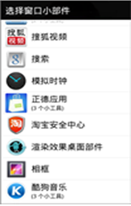
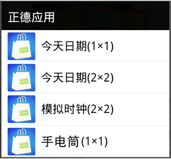
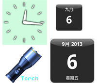

正德应用6 桌面小部件
1.添加桌面小部件快捷方式
如果你的手机是4.0及以上操作系统，请按照以下步骤添加：
打开应用列表，选择“桌面小部件”，如下图所示：

如果你的手机是4.0以下、2.3.3以上操作系统，请按照以下步骤添加：
在桌面上按菜单键，选择添加→桌面小部件：

然后点击“正德应用”即可弹出小部件列表、：

2.系统小部件快捷方式说明
小部件添加后的显示效果：

小部件添加后，会有相对应的功能：
●点击模拟时钟小部件将会跳转到闹钟设置界面；
●点击手电筒小部件将会跳转到手电筒页面并打开手电筒。